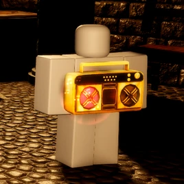
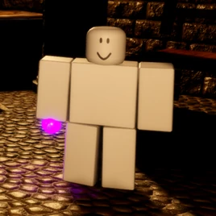
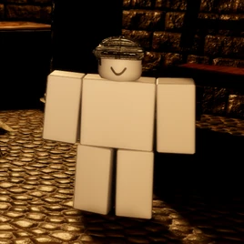
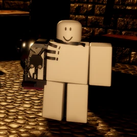
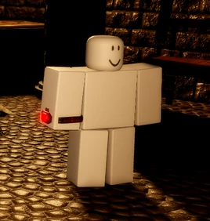

Frontliner

Otorga un escudo al usuario el cual proporciona una habilidad para soportar
daño de forma reducida y una habilidad de golpeo a los monstruos, ganando un
aumento de velocidad.
- Reduce de 100 a 80 de vida.
- Aumenta de 100 a 105 de estamina.
- Precio de 315 monedas.
- Reduce de 100 a 80 de vida.
- Aumenta de 100 a 105 de estamina.
- Precio de 315 monedas.
Auxiliary

Otorga un boombox el cual, dependiendo de la música, puede curarte y a otros
supervivientes u otorgar un boost de velocidad.
- Precio de 315 monedas.
- Precio de 315 monedas.
Vanisher

Otorga una poción purpura que te vuelve invisible al consumirla y curarte al verterla
sobre ti.
- Reduce de 100 a 60 de vida.
- Aumenta de 100 a 110 de estamina.
- Precio de 315 monedas.
- Reduce de 100 a 60 de vida.
- Aumenta de 100 a 110 de estamina.
- Precio de 315 monedas.
Visor

Otorga un casco visor el cual puede emitir un flash que ciega temporalmente
al monstruo y una luz que deja señalado al monstruo por una duración de segundos.
- Reduce de 100 a 90 de vida.
- Aumenta de 100 a 105 de estamina.
- Precio de 315 monedas.
- Reduce de 100 a 90 de vida.
- Aumenta de 100 a 105 de estamina.
- Precio de 315 monedas.
Usurper

Otorga un guantelete de metal con el cuál puedes recargar un puño, el cuál dependiendo
de que tan cargado esté, empujara a cierta distancia al monstruo y un bloqueo que, al
recibir daño del monstruo, empodera el guantelete y otorga estamina.
- Aumenta de 100 a 130 de vida.
- Reduce de 100 a 85 de estamina.
- Precio de 650 monedas.
- Aumenta de 100 a 130 de vida.
- Reduce de 100 a 85 de estamina.
- Precio de 650 monedas.
Timeshifter

Otorga un reloj que puede dar un boost de velocidad y retroceder a tu anterior
posición de hace 5 segundos.
- Reduce de 100 a 90 de vida.
- Reduce de 100 a 90 de estamina.
- Precio de 650 monedas.
- Reduce de 100 a 90 de vida.
- Reduce de 100 a 90 de estamina.
- Precio de 650 monedas.